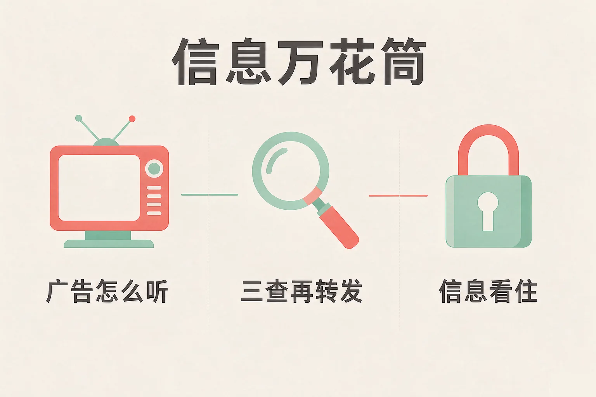
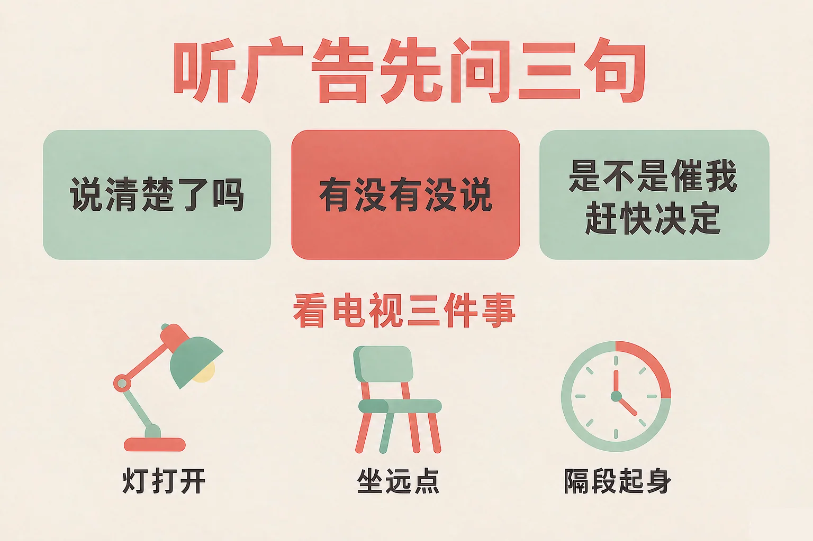
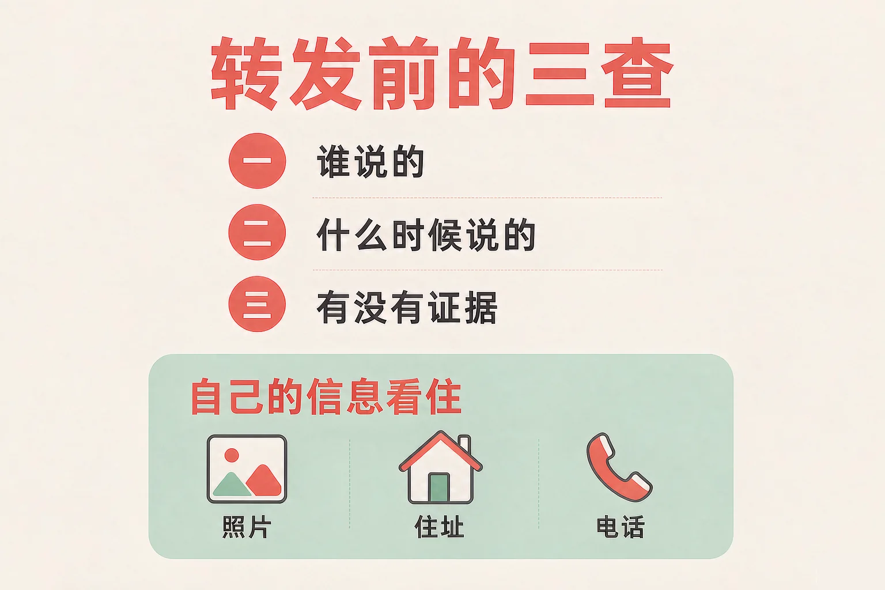

Gallery
v1.0.0 · skill v7.22.0
小学四年级 · 生命安全与健康
每天涌到眼前的信息，哪一些可以信？哪一些要先核实？

选一个你真正想知道的问题，后面的活动都会围着它转。
选择或输入后，这节课会围绕你的问题展开。
先凭直觉选一个，选完立刻看到解释——错了也没关系，正好知道要重点听哪里。
1. 家里长辈在群里转来一条消息，说某地的一种水果不能吃了。要判断能不能信，下面哪种做法更好？
三查是转发前最省事的一步：谁说的、什么时候说的、有没有证据。错因提醒：常见错误是误认为「好心提醒大家，转一转没关系」——如果这条消息本身是错的，转得越快，错得越远。
2. 一则广告写着「限时一小时，前一百名下单立减，手慢就没有了」。看到这句话，下面哪种想法更合适？
「限时」最想做到的事，就是让人来不及多想；先放一放，答案自己会清楚。错因提醒：有的同学把「它一直催我」搞混成「它一定很划算」——催得越急，越要先停一下。
3. 下面哪一样东西，最好不要随便发到网上或者公开的群里？
住址、学校全名和家人的电话连在一起，就能让人找到你家和你家人。错因提醒：容易把「发出去别人不一定看」误认为「发出去没关系」——信息发出去就收不回来了，先想一想再发。
为什么要学这一课？
我们每天都在看信息：电视里、手机上、路边的广告牌上（And）；信息多不是坏事，可有些话是别人为了让我买东西、让我赶快转发才那么说的（But）；所以这节课先学会听懂广告的三种说话方式，再学会转发前的三查（Therefore）。
广告在做的事，是把一件东西介绍给可能想买的人。可它是想让我买东西的，所以说话有讲究。

听到这些话，我可以问自己三句
它有没有把话说清楚？它有没有什么没说？它是不是想让我赶快做决定？
看电视这件事，也归自己管
时间上心里有个数，隔一段站起来走走；坐远一点、把屋里灯打开，眼睛舒服很多；内容也挑一挑，看完能说出看了什么，就不算白白花掉这段时间。
有的同学误认为「广告都在骗人，所以什么都不用听」。可广告里也有有用的信息，比如东西是做什么用的、多大、多少钱。学会分开看：说得清楚的地方可以参考，说不清楚的地方先放一放。
🔍 深层理解 换个角度再看一遍这件事，看看能不能说出背后的原理。
看见它：同一句「限时一小时」，可以听成「再不买就亏了」，也可以听成「它想让我赶快决定」。听成哪一种，你接下来做的事会很不一样。
解释它：为什么问一句「有没有什么没说」就这么有用？因为广告只讲它想让我看见的那一面，另一面得我自己去找。
迁移它：这套问话在看电视、看短视频、看街边广告牌时都用得上：不是不听，而是听完自己再想一想。
你现在是转发前的检查员。先点开一条消息，看清楚谁说的、什么时候说的、有没有证据，再决定怎么办。
先点开一条消息看看。
一条消息从一个人手里转到另一个人手里，可能转了几十次，每一次都可能被改掉一点。所以转发之前，先做三查。

三样都清楚，可以放心一些
三样里有一两样说不清，就先别转。不是不关心别人，而是先把事情弄清楚，转出去的话才真的帮得上忙。
自己的信息，也要看住
自己和家人的照片、姓名、学校、住址、电话，不随便发到网上，也不随手放进公开的群里。有人发来链接要填手机号、填住址才给东西，先停下来，问一声爸爸妈妈。
有的同学误认为「只要是好心提醒大家，转一转没关系」。可如果这条消息本身是错的，转得越快，错得越远，好心也会变成麻烦。顺序永远是：先核实，再转发。
🔍 深层理解 换个角度再看一遍这件事，看看能不能说出背后的原理。
看见它：「我先转过去，反正不是我写的」和「我先查一查，再决定转不转」，中间差着一步。差这一步，别人收到的可能是帮忙，也可能是麻烦。
比较它：同样是提醒大家注意，一种是学校正式发的通知，一种是听说来的消息。两种都出于好意，可只有前一种，大家照着做不会出错。
迁移它：三查不只用在家里：同学之间传来传去的消息、作业要求、活动时间，也都可以这样对一对，少跑很多冤枉路。
你是广告小侦探。先选一则广告，再从三种看它的方式里选一种，看看这样想之后会怎么样。选完可以换一种再试。
先在上面选一则广告。
情境：周末晚上，家里长辈在群里转了一条消息，说某地的一种水果不能吃了，让大家别买，还写着请马上转发给家里人。这条消息，该怎么看？
第五步：留下一个好办法
告诉长辈，以后看到这类消息，先看看是谁说的、什么时候说的、有没有证据，拿不准就问一句。这天晚上家里没有为一条消息闹别扭，长辈还学会了三查。
有的同学误认为消息不对，就要马上大声指出来。可对方往往是好意——把找到的证据拿出来，再一起看一看，比一句「这是假的」更容易让人接受。
先凭直觉选一个，选完立刻看到解释——错了也没关系，正好知道要重点听哪里。
1. 关于转发别人发来的消息，下面哪句话说得对？
三查过了再转发，转出去的才真的帮得上忙。错因提醒：常见错误是误认为「读起来有道理就是真的」——有些错消息写得很像回事，只有来源和时间能说明问题。
2. 一则广告说「孩子用了都考上了好学校」。下面哪种看法更合适？
一件事做得好，原因常常有好多个；广告只讲它想让我看见的那一面。错因提醒：有的同学把「说出了一半」搞混成「说出了全部」——听到很大的结论，先问一句它凭什么这么说。
3. 有一个链接写着「填手机号，免费领一套画笔」。下面哪种做法更好？
手机号和住址连在一起，就能让人找到你家和你家人；填之前先问一声最稳妥。错因提醒：容易把「填个号码没什么」误认为「填了也不会怎样」——信息发出去就收不回来了。
先点一条消息或说法，再点它应该进的筐：可以信放一边，先核实放另一边。
先在上面点一条消息。
分完之后，想一想：
下次家里人转来一条拿不准的消息，你打算先说哪一句？写在下面。
先凭直觉选一个，选完立刻看到解释——错了也没关系，正好知道要重点听哪里。
1. 同学在群里发了一张你们的合影，下面哪种做法更好？
照片里有别人，先问一句最稳妥；同意之后再发，谁都不会为难。错因提醒：常见错误是误认为「只发到小群里就不算公开」——照片一旦发出，就可能被再转出去。
2. 一条消息说某地明天要停水，落款写着当地供水部门的正式通知，时间是今天上午。下面哪种做法更好？
三查都过得去，这样的消息转给家里人正好用得上。错因提醒：有的同学把「谨慎」搞混成「什么都不转」——三查是为了转得准，不是为了什么都不做。
3. 你正在看一个很精彩的节目，已经看了一个多小时。下面哪种做法更好？
时间、距离和内容都由自己心里有个数，才叫真的会看。错因提醒：容易把「看得很入迷」误认为「这样看没问题」——眼睛累了、时间没了，都是要自己留意的信号。
一句口诀：说清楚了吗、有没有没说、是不是催我赶快决定；谁说的、什么时候说的、有没有证据。
给别人讲一遍：请用「三查」和「三句问话」这两个说法，给家里人讲一条你最近看到的消息。
再动一动手：写一写你家里最常转发消息的人是谁，你打算怎样把三查讲给他听。
三层练习，做完第一、二层就算通关；第三层留给愿意继续探索的同学。
⭐ 基础巩固（必做）
⭐⭐ 能力应用（必做）
⭐⭐⭐ 迁移挑战（选做）
左边是学它之前要先会的，右边是学会之后可以继续探索的，下面是同一领域的伙伴知识。
图谱正在加载：首次进入需下载知识索引（约 1–3 秒），加载完成后本行会自动消失。